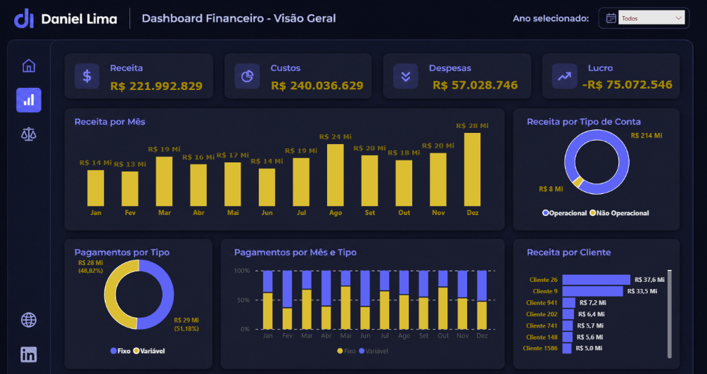

Sou profissional da área de Business Intelligence e Análise de Dados, com foco na construção de dashboards, modelagem de dados e geração de insights para apoiar a tomada de decisões. Utilizo Power BI, SQL, Excel, Power Query e Python para transformar dados em informações relevantes para o negócio.

Dashboard desenvolvido em Power BI para acompanhamento de receitas, despesas, lucro, fluxo de caixa e indicadores financeiros estratégicos.
Ver ProjetoProjeto em desenvolvimento para análise de indicadores de Recursos Humanos.
Projeto em desenvolvimento para análise de vendas, faturamento e performance comercial.
Atualmente em preparação para futuras certificações voltadas para Business Intelligence, Power BI, Microsoft Fabric e Análise de Dados.